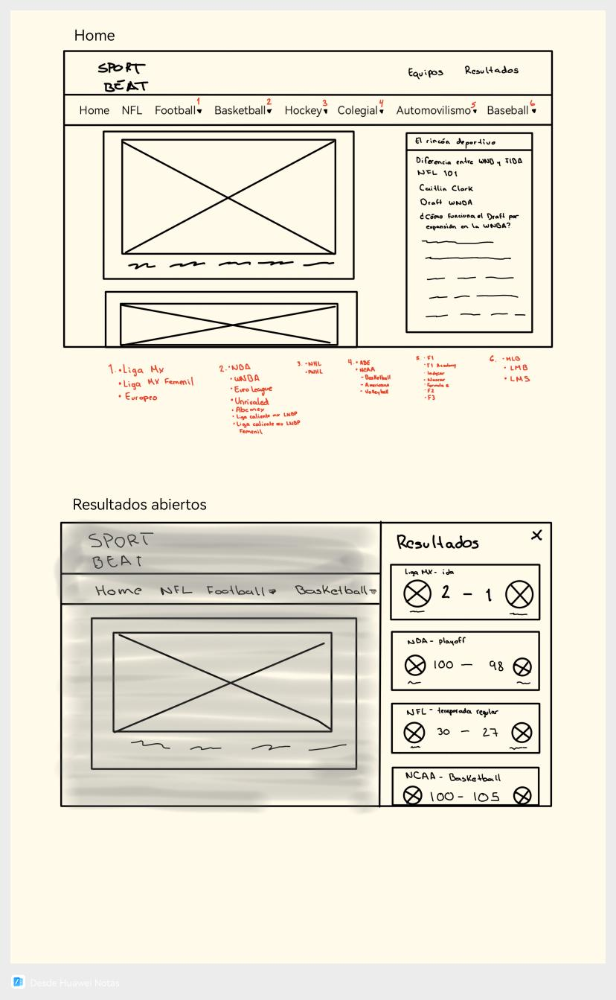
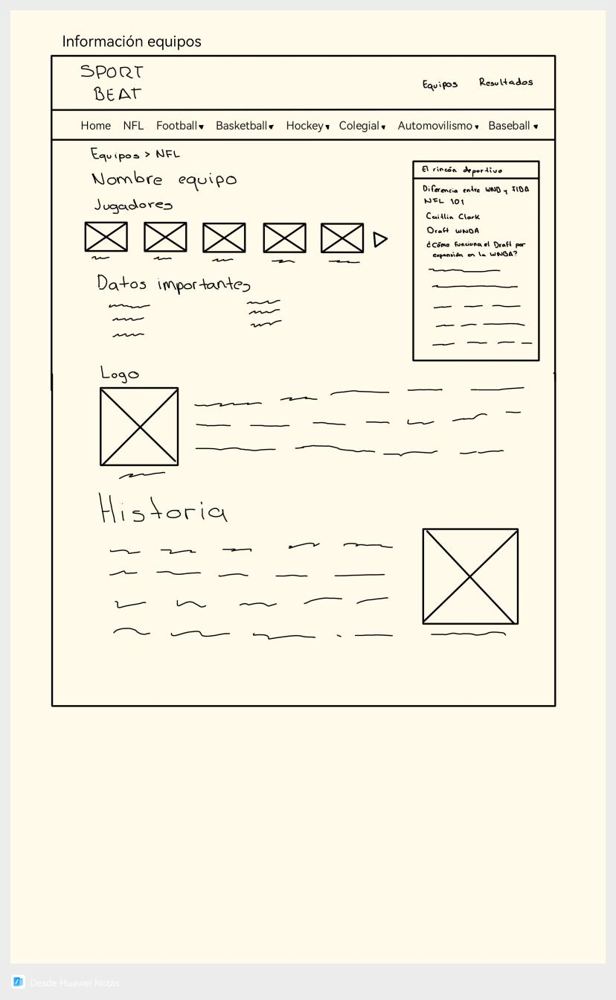
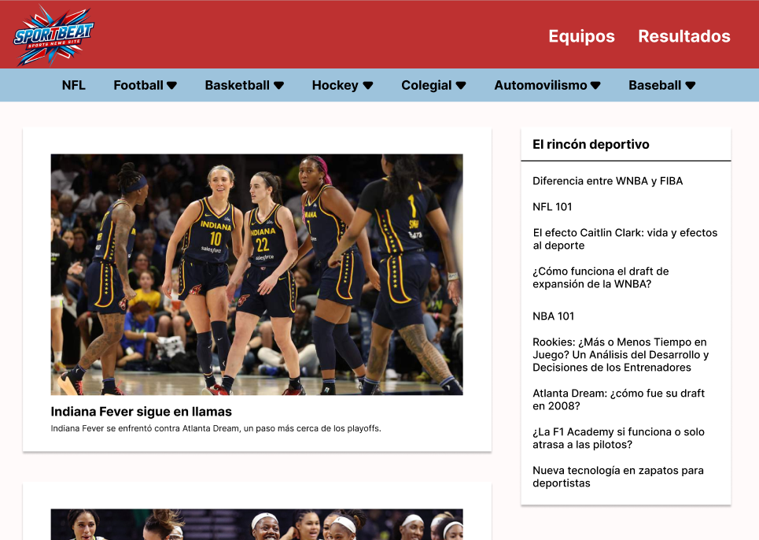

Caso de estudio de diseño UI e identidad visual para una plataforma digital de medios deportivos, enfocada en claridad, jerarquía y una fuerte presencia de marca.
SportBeat es un concepto de medio deportivo enfocado en ofrecer contenido claro, atractivo y visualmente estructurado a través de plataformas digitales. El proyecto se centra en construir una identidad visual sólida, respaldada por un sistema de interfaz escalable que prioriza la legibilidad, la jerarquía y la consistencia visual.
Participé como UI Designer, liderando la definición de la identidad visual, la estructura de layouts y los componentes principales de la interfaz. Mi trabajo incluyó transformar ideas iniciales en un sistema visual coherente, alineado con el tono de la marca y los objetivos del contenido.
El proceso de diseño comenzó con bocetos de baja fidelidad para explorar distintas opciones de layout y jerarquía de contenido. Posteriormente, estos bocetos se tradujeron en wireframes y diseños UI de alta fidelidad, permitiendo refinar el espaciado, la tipografía y los patrones de interacción, siempre con un enfoque en la usabilidad y la consistencia visual.


La interfaz final enfatiza el contraste, la tipografía y el uso del espacio para mejorar la lectura del contenido y reforzar la identidad de marca. El diseño fue pensado para soportar actualizaciones frecuentes de contenido, manteniendo coherencia visual entre secciones.
